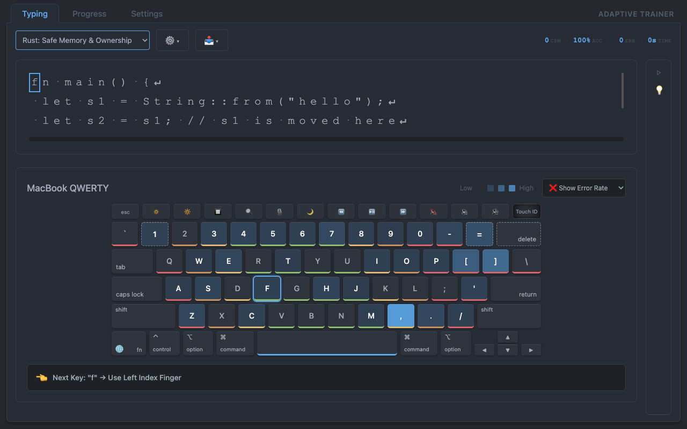
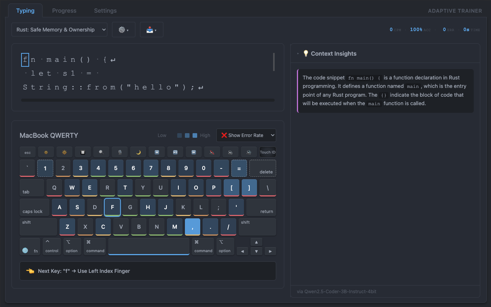
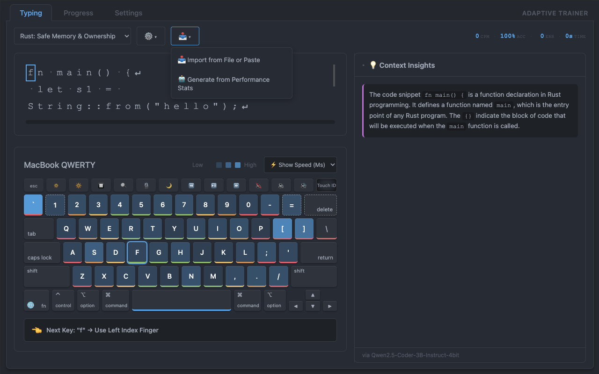
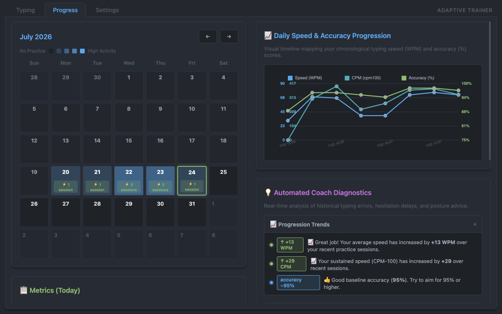
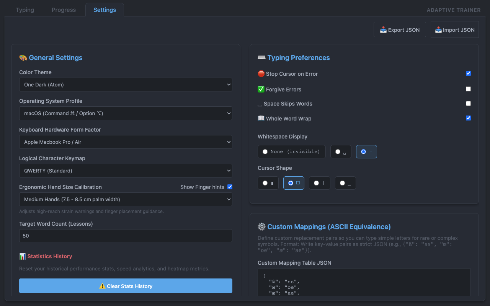
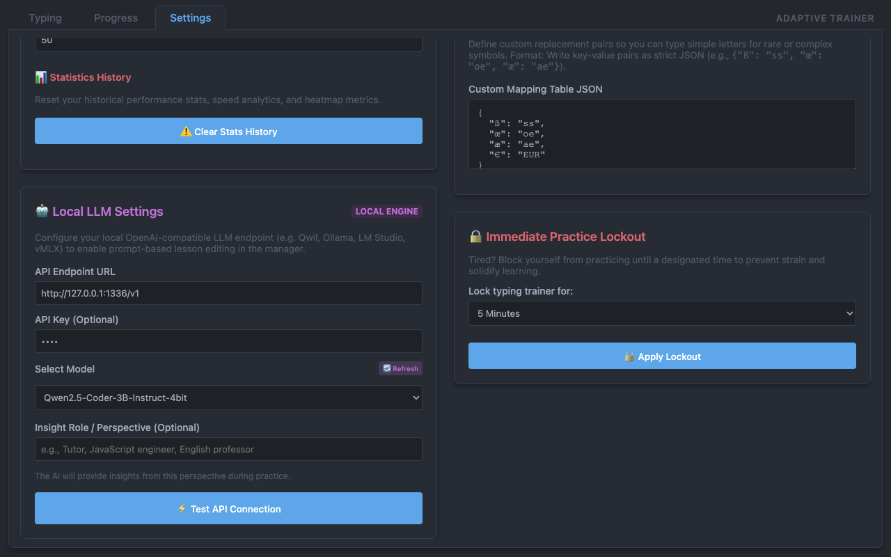

The privacy-first Chrome Extension that analyzes your physical typing patterns and integrates local language models (Ollama, LM Studio) to adapt to your skills in real-time.
Add to Chrome — It's Free & Offline-First
Every keystroke counts. Our integrated physical keyboard heatmap visualizes your typing speeds and error patterns directly as you type.

Don't just memorize the keys—understand the source code you are practicing. Our Context Insights panel streams explanations directly inside the editor.

Breathe new life into your practice routine. Load custom content manually or let our performance algorithm generate a custom lesson targeted at your weak spots.

Consistency is key to permanent muscle memory. The interactive dashboard translates your historical sessions into actionable, visual feedback.

Every hand shape, keyboard layout, and visual aesthetic preference is accounted for. Calibrate the trainer to blend seamlessly into your daily environment.

Enforce physical health boundaries and control where your AI data travels. LLM connection setups and voluntary locking are fully configurable.
Built intentionally for developers seeking zero compromises on privacy, functionality, and performance.
Instantly overlay key-by-key speeds and errors directly onto your exact keyboard hardware configuration.
Leverage local endpoints like Ollama or LM Studio. Explains complex coding lines with zero external cloud calls.
Interactive speed, accuracy, and latency charts alongside full session history tables on demand.
Easily swap difficult, high-strain symbols (like « æ » or « € ») with custom, easy-to-type ASCII alternatives.
Toggle between gorgeous, developer-friendly Atom One Dark and Atom One Light configurations.
Practice any text, codebases, or prose by simply dropping files into the dynamic dashboard.
Enforce healthy spacing routines. Lock typing activities for fixed periods to let muscle memory solidify.
Easily backup or migrate your entire progress record, custom materials, and presets in one click.
No remote metrics, no third-party cloud storage, and no hidden logins. Everything starts and ends safely on your local device.
| Data Component | Storage Target | Primary Purpose |
|---|---|---|
| Typing Sessions | IndexedDB (Local) | Visualizing progressive charts, daily analytics, and consistency streaks. |
| Key Statistics | IndexedDB (Local) | Drawing active physical keyboard heatmaps and guiding adaptive lesson synthesis. |
| Custom Lesson Texts | IndexedDB (Local) | Storing custom material imported via paste or loaded from files. |
| User Preferences | chrome.storage.local | Saving active layout configurations, hand sizes, cursor options, and theme modes. |
| AI Context Prompts | Local Network (User Host) | Streaming line-by-line helper explanations from your local model engine. |